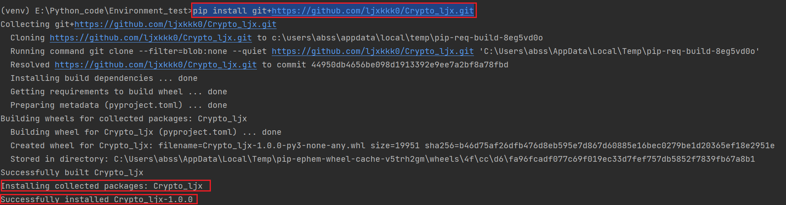
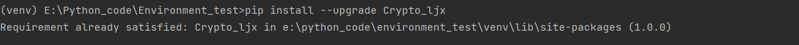
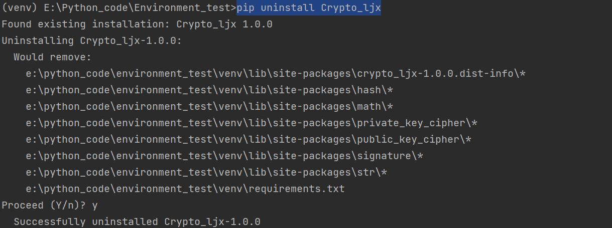

Python包-- Crypto_ljx
该python包为笔者学习密码学时所写，其中包括常用的密码学算法，对称加密：SM4、公钥加密：SM2、哈希：SM3、签名：SM2等。
一、 安装介绍
1. 使用pip安装Github上的软件包
pip支持直接从Github上拉取包，并自动解决其依赖关系。
注：
在你安装软件包之前，最好先创建一个虚拟环境。这样可以避免与其他项目的依赖冲突，并且使得软件包的安装和卸载更加方便。
使用以下命令来安装Github上的软件包：
1 | |

如果软件包有依赖关系，pip会自动安装这些依赖。你可以使用pip freeze命令来查看已安装的软件包及其版本信息。
2. 升级和卸载软件包
使用pip安装软件包后，你可能需要升级或卸载它们。pip提供了相应的命令来完成这些操作。
要升级软件包，可以使用以下命令：
1 | |

其中，[package_name]软件包的名称,Pip会自动检查版本并安装最新的软件包。
若卸载已安装的软件包，可以使用以下命令：
1 | |

二、 Crypto_ljx 使用介绍
1. Math模块
该模块包含了密码学中的很多常用数学运算，如快速模幂、求逆、生成大素数、括欧算法等。
Math.pyEuclidean(a,b)扩展欧几里得算法，用于求解裴蜀定理中的系数，使用方法如下
x, y, gcd = Euclidean(a, b) # 其中g=(a, b)，xa+yb=gcdQuickmod(a,b,m)快速模幂算法，
a为底数，b为指数，m为模数，使用方法如下sum = Quickmod(a,b,m)left_move(n,bit_len,move_step)循环左移，参数说明见注释，使用方法如下
n=left_move(n,length,step)Num_inv(a,m)求逆元，求
a mod m的逆元，使用方法如下inv = Num_inv(a,m)#满足 (inv*a)%m=1miller_rabin(num)米勒拉宾素性检测，默认检测十次，使用方法如下
miller_rabin(num)#return True/Falseis_prime(num)素数判断算法，小数据时结合素数表直接判断，大数据时调用
miller_rabin素性检测算法，使用方法如下is_prime(num)#return True/Falseis_prime(num)素数判断算法，小数据时结合素数表直接判断，大数据时调用
miller_rabin素性检测算法，使用方法如下is_prime(num)#return True/Falsecut_number(n,unit_length,cnt)切分数字，将
n切分成cnt个unit_length长度的数字，不足则高位补零，使用方法如下list = cut_number(n,32,4)#将n切分成5个32位的数字glue_number(list,length)拼接数字，将
list中数字按大端存储的顺序拼接成新的数字，length为单个数字比特长度，使用方法如下num = glue_number(num_list,unit_len)
2. Str模块
String.pys2n将一个字符串
s(str/bytes)转成一个整数(int)，使用方法如下n = s2n(s)n2s将一个整数
n(int)转化成一个字节串(bytes)，使用方法如下b = n2s(n)bytes2hex字节串
(bytes)转为16进制(str),高位补零，使用方法如下h = bytes2hex(b)hex2bytes16进制
(str)转字节串(bytes)，大端存储，使用方法如下b = hex2bytes(h)
3.
Private_Key_Cipher模块
该模块为对称密码，包含SM4分组密码算法，暂支持ECB、CBC两种工作模式进行加密/解密
SM4.py该文件包含两个类
SM4_encrypt、SM4_decrypt，分别用于加密、解密；包含两个参数
SM4_ECB、SM4_CBC，分别代表ECB工作模式、CBC工作模式包含一个函数
new，用于创建加密/解密对象
具体使用方法如下所示：
ECB模式：1
2
3
4
5
6
7
8
9
10
11
12
13
14
15
16
17
18
19
20
21
22
23
24
25
26
27
28
29
30
31
32
33
34
35
36
37
38
39
40
41
42
43
44
45
46
47
48from Private_Key_Cipher import SM4
"""
op取值'encrypt'或'decrypt'，代表加密或解密 :str
key为密钥 (16进制):str
mode为选取的工作模式，取值为SM4.SM4_ECB或SM4_CBC
Iv为CBC模式中所用的初始向量，可为空
"""
#SM4_ECB测试
SM4en=SM4.new(op='encrypt',key='4046fb1985d94a7f1ff55ec7ec5f6054',mode=SM4.SM4_ECB,Iv='a8638d2fb23cc49206edd7c84532eaab')
msg1=b'\xc0J\x9b1\x1a/\xc2E\xf7B\xc5q\x9f\xcf$\x9d'+b'\xc0J\x9b1\x1a/\xc2E\xf7B\xc5q\x9f\xcf$\x9d'
cipher=SM4en.encrypt(msg)
print(cipher)
'''
cipher=b'"\xec\xa9}\xcb2\x10\x17\xd0\xa0Y)h\xf1\xe5?"\xec\xa9}\xcb2\x10\x17\xd0\xa0Y)h\xf1\xe5?\xbcGX\xe1\xa3i\x13\x06m\xb6\xce\xdc\xe6\x1fz7'
'''
SM4de=SM4.new(op='decrypt',key='4046fb1985d94a7f1ff55ec7ec5f6054',mode=SM4.SM4_ECB,Iv='a8638d2fb23cc49206edd7c84532eaab')
msg2=SM4de.decrypt(cipher)
print(msg)
'''
msg2=b'\xc0J\x9b1\x1a/\xc2E\xf7B\xc5q\x9f\xcf$\x9d\xc0J\x9b1\x1a/\xc2E\xf7B\xc5q\x9f\xcf$\x9d'
'''
print(msg1 == msg2)
# True
- `CBC`模式：
```python
#SM4_CBC测试
from Private_Key_Cipher import SM4
SM4en=SM4.new(op='encrypt',key='4046fb1985d94a7f1ff55ec7ec5f6054',mode=SM4.SM4_CBC,Iv='a8638d2fb23cc49206edd7c84532eaab')
msg1=b'\xc0J\x9b1\x1a/\xc2E\xf7B\xc5q\x9f\xcf$\x9d'+b'\xc0J\x9b1\x1a/\xc2E\xf7B\xc5q\x9f\xcf$\x9d'
cipher=SM4en.encrypt(msg)
print(cipher)
'''
cipher=b'\xcb\xddV\x06B\x91\xb4j\x9b\xe2%\xc0\xd7^\\oF\xb6\xab\x91\xf2et\xb2bF\xe7W\x9e\xc2wb\xffsv\xa4\x83\xeb\xb3\x90\x95\xe8Z9\xa9?:\x99'
'''
SM4de=SM4.new(op='decrypt',key='4046fb1985d94a7f1ff55ec7ec5f6054',mode=SM4.SM4_CBC,Iv='a8638d2fb23cc49206edd7c84532eaab')
msg2=SM4de.decrypt(cipher)
print(msg2)
'''
msg2=b'\xc0J\x9b1\x1a/\xc2E\xf7B\xc5q\x9f\xcf$\x9d\xc0J\x9b1\x1a/\xc2E\xf7B\xc5q\x9f\xcf$\x9d'
msg1==msg2
'''
4.
Public_Key_Cipher模块
该非对称密码模块，包含了椭圆曲线基本操作以及基于椭圆曲线的SM2公钥加密/解密
ECC_operators.py椭圆曲线模块，用于实现椭圆曲线上的基本运算
- 包含一个参数
NULL_Point，表示椭圆曲线上的无穷远点 - 包含一个类
Elliptic_Curve，用于根据初始参数实例化一个椭圆曲线对象，可实现加法、减法、数乘等方法以及判断点是否在曲线上。
具体使用方法如下所示：
1
2
3
4
5
6
7
8
9
10
11
12
13
14
15
16
17
18
19
20
21
22from Public_Key_Cipher import ECC_operators
a=115792089210356248756420345214020892766250353991924191454421193933289684991996
b=18505919022281880113072981827955639221458448578012075254857346196103069175443
p=115792089210356248756420345214020892766250353991924191454421193933289684991999
Point1 = [64901889550129866513443884082574452575157116031103742365434905633820925813192,
84553412528427919723206133858954594911213526647800598970633596412071681640913]
Point2= [64901889550129866513443884082574452575157116031103742365434905633820925813192,
84553412528427919723206133858954594911213526647800598970633596412071681640913]
Curve_demo=ECC_operators.Elliptic_Curve(a=a,b=b,p=p)
Point3=Curve_demo.add(Point2,Point1)
print(Point3)
#输出：[91829719240076595600910287219737299259627413891073174690491219092963035830325, 31474822276849859104123114646070976974921401394140157637420547181522913249875]
Point4=Curve_demo.minus(Point1,Point2)
print(Point4)
#输出：[0, 0]
Point5=Curve_demo.multiply(Point1,125)
print(Point5)
#输出：[110117747631942453047618233423268750303736666185363479400181203180365983524117, 50029238751735848722678415529260555812010873439122287474234503373685614699938]
print(Curve_demo.check_point(Point1))
#输出：True注意：
其中需保证
p为素数，且a、b可构成椭圆曲线，即：
\[ 4a^{3}+27b^{2}\neq0 \] 否则会报错Curve对象初始化时还需填其它参数：G：椭圆曲线上的一个基点，类似于模素数p上的原根
n：基点G的阶
- 包含一个参数
SM2.pySM2公钥加解密模块，其中的群选用椭圆曲线上的点集构成的群- 包含一个方法
key_generate，基于所给参数随机生成公私钥对及加密所用随机数
- 包含一个类
SM2，用于实现公钥加密、私钥解密
- 包含一个方法
new，基于所给参数返回一个带公私钥对、随机数的SM2实例对象
具体使用方法如下所示：
1
2
3
4
5
6
7
8
9
10
11
12
13
14
15
16
17
18
19
20
21
22#SM2测试
a = 115792089210356248756420345214020892766250353991924191454421193933289684991996
b = 18505919022281880113072981827955639221458448578012075254857346196103069175443
p = 115792089210356248756420345214020892766250353991924191454421193933289684991999
g = [22963146547237050559479531362550074578802567295341616970375194840604139615431,
85132369209828568825618990617112496413088388631904505083283536607588877201568] # 基点
m = [62220385967324995556943859594383843316990201421105076884209933343560809233015,
9063699494246492215875763452283052636231938003241827298178711426179690419737] # 明文点
n = 62850942488285990642567364045064888609861641279362042129880709558414313 # 基点的阶
from Public_Key_Cipher import SM2
SM2demo=SM2.new(a,b,p,g,n)
plaintext=b'123456789'
cipher=SM2demo.encrypt(plaintext)
print(cipher)
#输出：0x04af649749295ee1f0c9f19f29f38947fe2a1207e5cf567ba0e3a6842a64d88856a928bda06f28e37e0aa68ac93bc258865975dd383cd7dea9062ecb43227c10834ae392436a9f6c5f70000000000000000000000000000000000000000000000000000000000000000000000000000000000000000000000000000000000000000000000000000000000000000000000000000000000000000000000000000000000000000000000000000000000000000000000000000000000000000000000000000000000000000000000000000000000000000000000000000000000000000000000000000000000000000000000000000000000000000000000000000000000000000000000000000000000000000000000000000000000000000000000000000000000000000029227e965c72b06de2610f4c56e8e981635c856b245bdca9c76884a1fa1514fe
plain=SM2demo.decrypt(str(cipher))
print(plain)
#输出：b'123456789'
print(plain==plaintext)
#输出：True- 包含一个方法
5. Signature模块
该模块包含了SM2数字签名算法
SM2_signature.pySM2数字签名模块，可实现签名和验证- 包含一个参数
hash_algorithm，为SM2中所用到的HASH函数,这里调用本密码库中的SM3
- 包含一个类
Sign_And_Verify，用于实现私钥签名、公钥验证
- 包含一个方法
new，基于所给参数返回一个带公私钥对、随机数的Sign_And_Verify实例对象
具体使用方法如下所示：
1
2
3
4
5
6
7
8
9
10
11
12
13
14
15
16
17
18
19
20
21
22
23
24
25
26#SM2签名
from Signature import SM2_signature
#椭圆曲线参数
prime=60275702009245096385686171515219896416297121499402250955537857683885541941187
a=54492052985589574080443685629857027481671841726313362585597978545915325572248
b=45183185393608134601425506985501881231876135519103376096391853873370470098074
G=[29905514254078361236418469080477708234343499662916671209092838329800180225085,2940593737975541915790390447892157254280677083040126061230851964063234001314]
n=60275702009245096385686171515219896415919644698453424055561665251330296281527#椭圆曲线的阶
#用户标识
ID='ALICE123@YAHOO.COM'.encode('utf-8')
#用户公钥
PK=[4927346340877997421592888003129352901369751434954921663604743238822873158794,56090775331359075302546016414740579914612192649583459645010750108260086900823]
#待签名消息
Message='message digest'.encode('utf-8')
#私钥
da=8387551947784012071400071471596312053542870740821494713120726177333060924003
#随机数
k=49165263701565432377505549247848435858362931747789390865593867043744446085487
sign=SM2_signature.new(Mode='Sign',a=a,b=b,prime=prime,G=G,n=n,ID=ID,Message=Message,Pk=PK,d=da,k=k)
print(sign)
#输出：(29375463689586694004441797766812698475573938256363780089425801847059442521553, 50558071754134037809738440507460307292654583241166284157895327241897986943975)
verify=SM2_signature.new(Mode='Verify',a=a,b=b,prime=prime,G=G,n=n,ID=ID,Message=Message,Pk=PK,d=da,k=k,r=sign[0],s=sign[1])
print(verify)
#输出：True- 包含一个参数
6. Hash模块
该模块包含了SM3哈希算法，用于生成消息摘要,支持对文件的摘要
SM3.pySM3哈希模块，可对小于2^64bit长度的消息计算其256位哈希值，可返回hex或bytes- 包含一个类
SM3，包含update方法、file_hash方法，支持digest、hexdigest方法。
具体使用方法如下所示：
1
2
3
4
5
6
7
8
9
10
11
12
13
14
15#SM3测试
from Hash import SM3
words='this is the first SM3 testcase.'.encode('utf-8')
SM3demo=SM3.SM3(words)
print(SM3demo.hexdigest())
#输出：0x1c7d1fcf91f37a2ecb8877b5896d3474010784a75cdb1d392375029c4469e653
print(SM3demo.digest())
#输出：b'\x1c}\x1f\xcf\x91\xf3z.\xcb\x88w\xb5\x89m4t\x01\x07\x84\xa7\\\xdb\x1d9#u\x02\x9cDi\xe6S'
Hash=SM3demo.file_hash('D:\download\C2-Solution.pdf')
print(Hash)
#输出：0x8781fd10893306c98813b31d0e9be3e035d0c9abb54ac7ec542485eb9fba9e0b
"""
可用第三方库gmssl进行验证
"""- 包含一个类